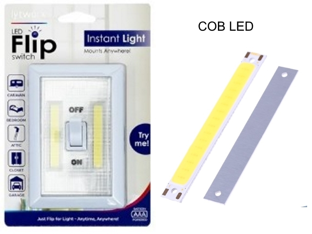
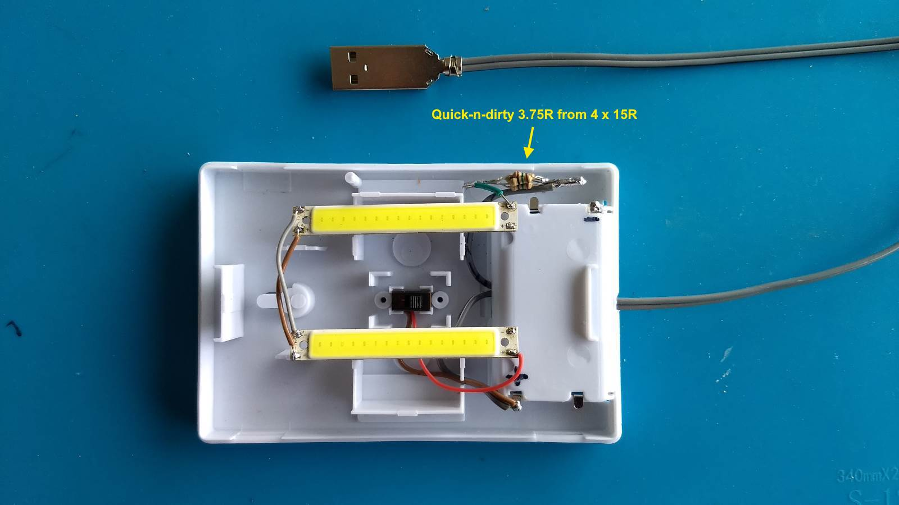
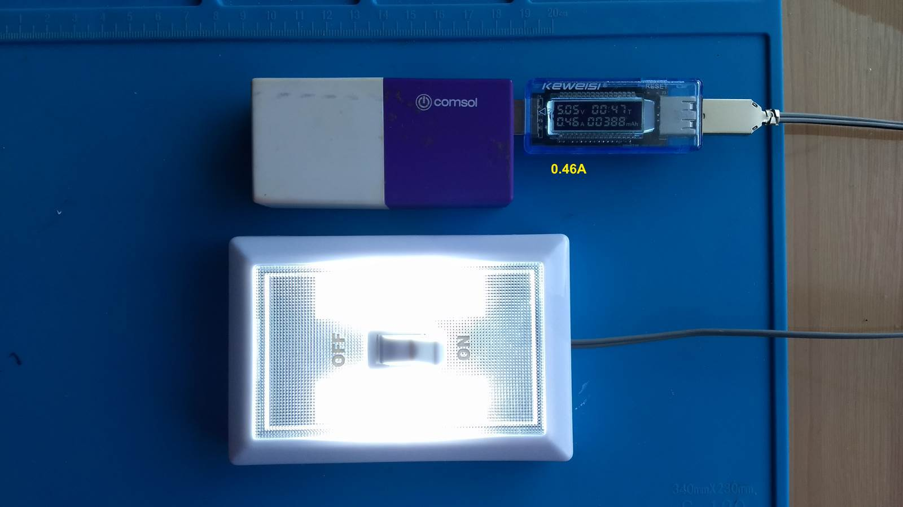
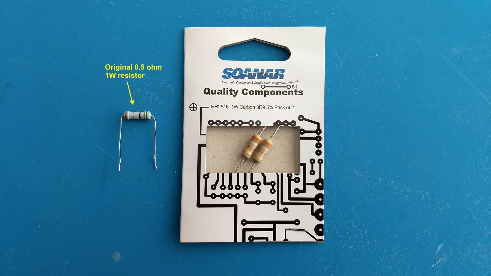

LED Flip Switch powered from USB
Bunnings sells a battery-powered LED Flip Switch that is very useful and bright. It has 2 COB LED strips with the following specifications:
- Material: aluminum alloy plate + LED COB
- Power: 1W
- Input Voltage ac / DC 2-2.6 (red) 3V-4V (others)
- Maximum current: 300mA (1W) / 1000mA (3W)
- Luminous flux: 100 lm / W
- Lamp Color: cold white (6000-6500K), warm white (2700K-3200K), red (620-630nm), blue (450-460nm)
- Size: 60mm * 8mm
- Lighting area: 50mm * 7mm
- Low attenuation, 1000h attenuation <1%
Well, continuous 1A from a USB 3 socket can't be good in the long run. The light has a current limiting resistor of 0.5 ohm which suited the 3 AAA batteries but obviously was not enough for USB 3. ledcalc.com indicated a 3.9 ohm 1W resistor would be more appropriate but not having one on hand, I paralled 4 x 15 ohm 0.25W resistors to form 3.75 ohm approx 1W as a test.

This brought the current consumption down to 0.46A which was more acceptable.

Update: just bought 3.9 ohm 1W resistors from Jaycar for a more permanent solution.
